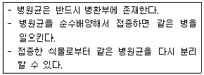
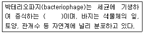

종자기사 (2007-08-05 기출문제)
1과목: 종자생산학
1. 종자의 후숙(추숙)에 관한 설명 중 틀린 것은?
- 채종한 종자를 일정기간 음건하는 것을 말한다.
- 종과를 일정기간 음건하는 것을 말한다.
- 종자를 고르게 익히는데 효과적이다.
- 종자를 충실히 하고 휴면을 없이 한다.
(정답률: 알수없음)

2. 원종을 방임 채종 할 경우 격리거리를 가장 멀리해야 하는 것은?
- 파
- 당근
- 배추
- 토마토
(정답률: 알수없음)
3. 자가불화합성을 이용하여 배추과 채소의 F1채종을 할 때 양친의 개화기를 일치시키는 방법으로 적합하지 않은 것은?
- 저온처리
- 일장처리
- CO2처리
- 파종기 조절
(정답률: 알수없음)
4. 종자발달에서 배유의 발달과 기능에 대한 설명으로 맞지 않는 것은?
- 배유 세포는 주변 조직으로부터 얻은 양분을 배에 공급한다.
- 대부분 쌍자엽식물에서 배유는 분화되지만 종자발육과정에서 퇴화한다.
- 배유 세포는 적극적으로 양분 흡수를 할 수 없다.
- 배유의 맨 바깥 세포층을 호분층이라 한다.
(정답률: 알수없음)
5. 다음 중 화아 분화를 위한 온도 조건이 다른 작물은?
- 딸기
- 상추
- 배추
- 양파
(정답률: 알수없음)
6. 종자를 너무 늦게 수확할 경우에 볼 수 있는 가장 큰 피해 현상은?
- 탈곡조제과정에서 상처를 받기 쉽다.
- 정선과정에서 등숙정지립이 많아 손실이 많다.
- 건조과정에서 위축되는 종자가 많다.
- 배 휴면하는 종자가 많다.
(정답률: 30%)
7. 전분종자를 안전하게 저장하려면 종자를 최소한 어느 정도까지 건조시켜야 하는가?
- 약 14%
- 약 16%
- 약 18%
- 약 20%
(정답률: 34%)
8. 종자 발아시 활성을 갖는 주요 가수분해 효소는?
- 아밀라제
- 아미노산
- 만노스
- 포도당
(정답률: 알수없음)
9. 다음 작물종자 중 배(胚)가 낫 모양을 하고 있는 종자는?
- 무
- 명아주
- 쇠비름
- 시금치
(정답률: 46%)
10. 상추 종자를 채종한 후 상온하에서 휴면타파를 위한 저장 방법은?
- 건조 저장
- 다습 저장
- 고온 저장
- 저온 저장
(정답률: 알수없음)
11. 종자의 발아촉진 및 유묘 생육의 균일화를 기하기 위한 방법으로 사용하고 있는 삼투프라이밍 재료로 가장 많이 이용되고 있는 것은?
- PEG
- H2SO4
- KH2PO4
- NaCl
(정답률: 알수없음)
12. 국제시장에서 유통되고 있는 식물 종자의 보증을 하는 국제기구는?
- OECD
- ISTA
- WHO
- FAO
(정답률: 36%)
13. 다음 중 종자 프라이밍의 주 목적으로 옳은 것은?
- 종피에 함유된 발아억제물질의 제거
- 종자전염 병원균 및 바이러스 방제
- 유묘의 양분흡수 촉진
- 종자발아에 필요한 대사과정 촉진
(정답률: 알수없음)
14. 일반 실내 저장의 경우 종자의 수명이 가장 짧은 것은?
- 벼
- 양파
- 가지
- 배추
(정답률: 알수없음)
15. 감자의 종자검사에서 싹튼 감자의 기준은?
- 눈이 1mm정도 자란 것
- 눈이 3mm정도 자란 것
- 눈이 4mm이상 자란 것
- 눈이 5mm이상 자란 것
(정답률: 알수없음)
16. 순도분석시 정립의 범주에 속하지 않는 것은?
- 그 작물에 속하는 다른 품종
- 동일 품종 내에서 유전적 변이체(이형주)
- 종피가 완전히 벗겨진 콩과식물
- 쇄립이라도 원래 종자 크기의 반절 이상인 것
(정답률: 64%)
17. 종자 수분검사시 시료의 중량은 그램(g)으로 나타내는데, 측정은 소수점 아래의 몇 자리까지 계랑하는가?
- 한 자리
- 두 자리
- 세 자리
- 네 자리
(정답률: 알수없음)
18. 광선을 연속적으로 처리하면 발아가 억제되는 작물은?
- 보리
- 옥수수
- 배추
- 부추
(정답률: 알수없음)
19. 검사실(분석실)에서 제출시료로부터 취한 부할 시료로 품위검사에 제공되는 시료는?
- 검사시료
- 1차시료
- 합성시료
- 분할시료
(정답률: 37%)
20. 다음 중 채종포의 재식방법으로 가장 알맞은 것은?
- 산파밀식(散播密植)
- 산파소식(散播疎植)
- 조파밀식(條播密植)
- 조파소식(條播疎植)
(정답률: 알수없음)
2과목: 식물육종학
21. 수정하지 않은 난(卵)세로가 단독으로 발육하여 완전한 배를 형성하는 생식법은 다음 중 어느 생식법에 포함되는가?
- 동정생식
- 무배생식
- 무포자생식
- 단성생식
(정답률: 알수없음)
22. 조건유전자가 관여하는 경우 잡종의 F2의 분리비는?
- 9 : 7
- 9 : 3 : 4
- 12 : 3 : 1
- 13 : 3
(정답률: 알수없음)
23. 품종의 개념을 설명한 것으로 옳은 것은?
- 작물의 재배 및 이용상 동일한 특성을 나타내며 동일한 단위로 취급하는 것이 편리한 개체군이다.
- 타가수정 작물은 유전적 조성이 동형(homo)의 개체 집단이다.
- 자가수정 작물은 실용적 형질만 유전적으로 동형(hpmo)이고, 전체적인 유전 조성은 어느 정도 잡다해도 된다.
- 1대 잡종은 품종이라 할 수 없다.
(정답률: 알수없음)
24. 원예작물 중 특히 과수류의 우수 개체선발에 있어서 중요하게 이용되어온 아조변이(芽條變異)는 어떠한 변이에 속하는가?
- 일시적 변이
- 체세포 돌연변이
- 교배변이
- 대위변이
(정답률: 알수없음)
25. 배우자적 웅성 불임성을 설명한 것 중 가장 적합한 것은?
- S1S2 X S2S2 → 화합
- S1S3 X S1S2 → 불화합
- S2S2 X S2S3 → 화합
- S1S2 X S1S1 → 불화합
(정답률: 알수없음)
26. 장벽수정(hercogamy)의 대표적 식물은?
- 양파
- 복숭아
- 붓꽃
- 국화
(정답률: 알수없음)
27. 식물체의 경우 반수성을 갖는 세포 또는 조직은?
- 화분모세포
- 반족세포
- 배유
- 배
(정답률: 67%)
28. 자가수정 작물에서 두 유전자가 연관되어 있을 때 각 분리세대에서 나타나는 새로운 고정형 조합(homozyous plant)의 빈도는 독립 유전하는 경우와 비교하면 어떻게 되겠는가?
- 독립 유전의 경우보다 높다.
- 독립 유전의 경우보다 낮다.
- 독립 유전의 경우와 비교할 수 없다.
- 두 유전자 간의 교차율에 따라 높을 수도 있고 낮을 수도 있다.
(정답률: 알수없음)
29. 토마토 F1과 F2집단에서 조사한 과일 무게의 분산값은 각각 18g 및 90g 이었다. 넓은 의미의 유전력은?(오류 신고가 접수된 문제입니다. 반드시 정답과 해설을 확인하시기 바랍니다.)
- 90%
- 80%
- 20%
- 18%
(정답률: 34%)
30. 다음 육종방법 중 내병성(耐病性)육종에 흔히 쓰이는 것은?
- 순계 분리법
- 집단 육종법
- 돌연변이 육종법
- 여교잡 육종법
(정답률: 알수없음)
31. 잡종 초기세대, 즉 F2에서 F6또는 F7까지 대부분의 개체가 고정될 때까지는 선발하지 않고 실용적으로 고정되었을 때 계통육종법과 같은 방법으로 선발해 나아가는 육종방법은 ?
- 집단육종법
- 여교잡육종법
- 파생계통육종법
- 복교잡육종법
(정답률: 알수없음)
32. 계통 분리법에 관한 설명으로 틀린 것은?
- 주로 타식성 작물의 재래종 개량에 쓰인다.
- 자식열세 현상이 강한 재래종 개량에 쓰인다.
- 잡종강세를 최대로 이용하려는 방법이다.
- 계통 분리시 인위적인 교배를 하지 않는다.
(정답률: 알수없음)
33. AA와 BB 게놈을 가지고 있는 2배체를 가지고 AABB와 같은 이질배수체를 만드는 방법으로 옳은 것은?
- AA X BB의 교배를 계속한다.
- AA와 BB를 콜히친 처리하면 된다.
- AA와 BB를 각각 4배체로 만들어 다시 교배시켜 만든다.
- 한쪽만 4배체로 만들어 교배시키면 된다.
(정답률: 40%)
34. 이면교잡법의 주요 목적을 기술한 것 중 적합하지 않은 것은?
- 양친의 유전자형을 추정하기 위함이다.
- F1에서 조합능력을 검정하기 위함이다.
- 일반조합 능력은 평가할 수 있으나 특수조합능력은 검정 할 수 없는 것이 단점이다.
- 환경의 영향도 함께 분석할 수 있다.
(정답률: 알수없음)
35. 생리생육성(生理生育性) 형질에 속하는 것은?
- 발아 및 휴면성
- 종피색
- 식미
- 함유성분
(정답률: 알수없음)
36. 다음 중 신품종의 퇴화 요인으로 가장 거리가 먼 것은?
- 돌연변이에 의한 것
- 기계적 혼입
- 유전자의 분리
- 자가불화합
(정답률: 37%)
37. 다음 중 원종'의 설명으로 가장 적합한 것은?
- 기본식물에서 직접 증식된 종자
- 원원종 포장에서 생산된 종자
- 보급종에서 1세대 증식된 종자
- 원원종 포장에서 생산된 종자를 재배하여 수확한 종자
(정답률: 31%)
38. 종자번식 작물로서 품종의 특성을 유지하기 위하여 영양번식에 의한 보존재배에 해당하는 것은?
- 주보존 재배
- 격리 재배
- 원원종 재배
- 채종 재배
(정답률: 알수없음)
39. 식용 아스파라거스를 종자 파종하면 자웅이 거의 1:1로 나온다. 웅주만을 재배하기 위하여 사용하는 방법은?
- 염색체 전좌 이용
- 생장점 배양
- 방사선 처리
- 에스펠(Ethrel) 처리
(정답률: 알수없음)
40. 수량성을 늘리기 위한 육종방법(다수성 육종)에 대한 설명 중 틀린 것은?
- 수량성은 주로 폴리진(polygene)이 관여하는 전형적인 양적 형질이다.
- 환경의 영향을 많이 받기 때문에 유전력이 높은 편이다.
- 다수성 육종에서는 계통육종법보다 집단육종법이 유리하다.
- 수량성의 선발은 개체선발보다 계통선발에 중점을 둔다.
(정답률: 알수없음)
3과목: 재배원론
41. 맥류 중 밀의 게놈(genome)의 염색체 수는 ?
- n=4
- n=7
- n=12
- n=24
(정답률: 알수없음)
42. 시비한 후 토양 중의 생리적 반응으로 염기성을 나타내는 비료는?
- 용성인비
- 황산칼륨
- 요소
- 중과인산석회
(정답률: 알수없음)
43. 논토양 교질의 개념과 작용의 설명으로 옳은 것은?
- 토양 교질은 양이온을 나타낸다.
- 토양에 점토나 부식은 교질화를 증대한다.
- 토양 교질화가 증대될수록 C.E.C(양이온치환용량)는 적어진다.
- 토양에 C.E.C가 적어지면 양분의 흡착력은 커진다.
(정답률: 알수없음)
44. 벼, 보리 등은 1년생 작물이고 자가수분작물이다. 종자갱신의 방법이 가장 적합한 것은?(단, 기계적혼합의 경우는 제외)
- 자가에서 정선하면 종자교환 할 핑요가 없다.
- 원종생산장에서 보급종을 4년마다 교환한다.
- 원종생산장에서 10년마다 교환한다.
- 작황이 좋은 농가에서 교환한다.
(정답률: 알수없음)
45. 다음 중 일장처리에 감응이 가장 잘 되는 부위는?
- 유엽(幼葉)
- 성엽(成葉)
- 노엽(老葉)
- 유엽과 성엽 모두
(정답률: 알수없음)
46. 벼의 시비 체계에서 수비(이삭거름)의 시용 시기는?
- 최고분얼기
- 유수형성기
- 수전기
- 등숙기
(정답률: 알수없음)
47. 작물재배에서 토양의 유효수분의 범위는?
- 0.3~15기압
- 16~21기압
- 22~30기압
- 31~1000기압
(정답률: 알수없음)
48. 삼한시대 재배되었다고 하는 오곡(五穀) 중에 포함되지 않는 작물은?
- 보리
- 참깨
- 벼
- 피
(정답률: 알수없음)
49. 생육단계와 재배조건에 따른 내건성 설명이 잘못된 것은?
- 작물의 내건성은 생식 생장기가 가장 약하다.
- 화곡류는 감수분열기에 가장 약하다.
- 퇴비, 인산, 가리를 적게 주고, 질소를 많이 주고, 밀식을 하였을 경우 내건성이 강해진다.
- 건조한 환경에서 생육시키면 내건성은 증대된다.
(정답률: 알수없음)
50. 작물이 분화되어 가는 마지막 과정은?
- 도태(淘汰)
- 격절(隔絶)
- 순화(馴化)
- 적응(適應)
(정답률: 알수없음)
51. 메밀에서 볼 수 있는 현상이 아닌 것은?
- 이형예현상
- 장주화
- 적법수분
- 교잡불화합성
(정답률: 0%)
52. 중위도 지대에서의 조생종은 어떤 기상생태형 작물인가?
- 감온형
- 감광형
- 기본영양생장형
- 중간형
(정답률: 24%)
53. 천립중이 25g, 수분함량이 15%, 순도가 90%, 발아율이 90%인 종자의 진가(眞價, 용가)는?
- 13.5
- 22.5
- 37.5
- 81.0
(정답률: 50%)
54. 건조 또는 반건조지역에서 토양을 파종할 곳 만을 경운하여 앞 작물의 그루터기를 그대로 남겨서 풍식과 수식을 경감시키는 멀치(mulch)는?
- straw mulch
- soil mulch
- stubble mulch
- poly mulch
(정답률: 알수없음)
55. 도복(lodging)의 유발에 관한 설명이 잘못된 것은?
- 키가 크고 대가 약한 품종일수록 도복이 심하다.
- 가리, 규산 다용은 도복을 유발한다.
- 밀식, 짌 다용은 도복을 유발한다.
- 가을 멸구의 발생이 많으면 도복이 심하다.
(정답률: 알수없음)
56. 연작에 의한 작물의 기지현상 설명으로 틀린 것은?
- 토양 중에 염류집적이 크기 때문이다.
- 토양에 유독물질이 다량 축적도기 때문이다.
- 연작장해가 가장 큰 작물은 인삼이다.
- 여름철 고온, 다습 조건에서 많이 발생한다.
(정답률: 40%)
57. 다음 방사선량의 단위로 사용되지 않는 것은?
- rad
- rep
- rhm
- rpm
(정답률: 알수없음)
58. 영양번식의 이점이 아닌 것은?
- 종자번식이 어려울 때 이용된다.
- 우량 유전자를 영속적으로 유지시킬 수 있다.
- 많은 유전적 계농을 만들 수 있다.
- 접목에 의한 수세를 조절할 수 있다.
(정답률: 알수없음)
59. 우리나라 작물재배의 특색 중 작부체계와 초지농업이 발달하지 못한 가장 큰 이유는?
- 경영규모가 영세하여 고투입 집약농업으로 발달해 왔기 때문이다.
- 농가 소득 증대에 도움이 되는 작물만을 집약적으로 재배해 왔기 때문이다.
- 화곡류 위주의 약탈식 집약농업을 해온 관계로 토양의 비옥도가 낮기 때문이다.
- 사계절이 뚜렷하고 기상재해가 커서 다양한 작부방식이나 초지 농업의 적용이 어려웠기 때문이다.
(정답률: 알수없음)
60. 다음 방사선 동위원소에서 추적자로 사용하지 않는 것은?
- 14C
- 45Ca
- 60Co
- 24Na
(정답률: 알수없음)
4과목: 식물보호학
61. 다음 포자 중 유성생식 결과 생성되는 것이 아닌 것은?
- 분생포자
- 자낭포자
- 담자포자
- 접합포자
(정답률: 25%)
62. 흰가루병균과 같이 살아있는 기주에 기생하여 기주의 대사산물을 섭취해서만 살아갈 수 있는 병원균은?
- 순사물기생자
- 반사물기생자
- 순활물기생자
- 반활물기생자
(정답률: 알수없음)
63. 잡초가 작물과의 경합에서 유리한 위치를 차지할 수 있는 잡초의 특성을 기술한 것 중 틀린 것은?
- 잡초종자는 일반적으로 크기가 작아 발아가 빠르다.
- 대부분의잡초는 생육 유연성을 갖고 있어 밀도 변화가 있더라도 생체량을 유연하게 변화시킨다.
- 대부분의 잡초는 C3 식물로서 대부분이 C4식물인 작물에 비해 광합성 효율이 높다.
- 잡초는 작물에 비해 이유기가 빨리 와서 초기 생장속도가 작물에 비해 빠르다.
(정답률: 알수없음)
64. 유기인계 살충제의 성질과 관계가 먼 것은?
- 신경독이다.
- 모두 맹독성 농약이다.
- 알칼리에 분해되기 쉽다.
- 일반적으로 잔효성이 짧다.
(정답률: 80%)
65. 다음[보기]와 같이 식물병 입증 3원칙을 확립한 사람은?

- 린네(Linne)
- 밀라드(Millardet)
- 드 바리(De bary)
- 코호(Koch)
(정답률: 알수없음)
66. 다음 밭 잡초 중 광엽 1년생 잡초에 속하는 것은?
- 바랭이
- 개비름
- 쇠뜨기
- 메꽃
(정답률: 알수없음)
67. 다음 [보 기]의 ( )에 적합한 것은?

- 복원중
- 복원중
- 복원중
- 복원중
(정답률: 알수없음)
68. 현탁액에 있어서 고체입자가 균일하게 분산 부유하는 성질과 안정성을 나타내는 물리적 성질은?
- 현수성
- 유화성
- 침투성
- 분산성
(정답률: 알수없음)
69. 다음 중 곤충의 휴면에 관한 설명 중 틀린 것은?
- 매 세대(世代)마다 휴면에 들어가는 것을 기회적 휴면이라 한다.
- 불리한 환경조건, 특히 저온기간 중 내한성을 유발한다.
- 어떤 특정한 환경조건에 접할 경우 대사와 발육이 정지 상태로 들어간다.
- 불리한 환경에 대해 생존율을 증대시키는 기작이다.
(정답률: 알수없음)
70. 곤충에서 변태호르몬을 분비하고 식도 양쪽에 1쌍이 있는 신경구 모양의 조직은?
- 현도세포
- 알라타제
- 지방체
- 기저막
(정답률: 67%)
71. 종자 소독을 위해 분제를 종자의 외피에다 골고루 묻혀서 살균 또는 살충하는 약제 처리법은?
- 침적법
- 분의법
- 훈증법
- 분무법
(정답률: 알수없음)
72. 곤충의 동족 간 커뮤니케이션 등 감각 수용기능을 갖는 기관은?
- 겹눈
- 더듬이
- 홑눈
- 기문
(정답률: 알수없음)
73. 맥류 줄기녹병의 설명으로 틀린 것은?
- 병원균이 이종기생균이다.
- 종자 전염한다.
- Puccinia 속균에 의하여 발생한다.
- 병원균의 race가 있다.
(정답률: 알수없음)
74. 다음 중 영양번식을 하는 잡초는?
- 물달개비
- 올방개
- 둑새풀
- 바랭이
(정답률: 알수없음)
75. A약제의 유제 50%를 0.08%로 희석하여 10a 당 5말로 살포하려고 할때 소요약량은?(단, 비중은 1.25이다.)
- 360cc
- 156.2cc
- 115.2cc
- 110.5cc
(정답률: 알수없음)
76. C4식물의 광합성 과정에서 CO2 고정에 관여하는 효소는?
- RuBp carboxylase
- Malate dehydrogenease
- PEP carboxylase
- Pyruvate dikinase
(정답률: 30%)
77. 시설원예의 대표적인 해충으로 성충의 체 표면이 전체 흰색을 나타내며, 침 모양의 주둥이를 이용하여 흡즙하는 해충은?
- 복숭아혹진딧물
- 고자리파리
- 온실가루이
- 잎굴파리
(정답률: 알수없음)
78. 파리나 네발나비의 미감각수기관(味感覺受器官)이 위치한 곳은?
- 날개
- 더듬이
- 앞가슴
- 발목마디
(정답률: 알수없음)
79. 농약을 보관할 때 주의할 점으로 옳은 것은?
- 농약은 고온일수록 분해가 촉진되므로 25℃~30℃범위의 장소에 저장할 것
- 분제는 습기가 많으면 물리성이 안정되므로 습한 곳에 저장할 것
- 유효기간이 지난 약제도 약효에 아무런 지장이 없으므로 다시 사용하기 위해 암냉소에 잘 보관할 것
- 제초제는 살균, 살충제와 격리 보관할 것
(정답률: 70%)
80. 천연물 관련 합성피레스로이드계 살충제의 특성이 아닌 것은?
- 제충국의 살충성분인 cinerin 의 합성물이다.
- 인축 및 어패류에 안전하다.
- 신경 독성화합물이다.
- 고온보다는 저온에서 약효발현이 잘 된다.
(정답률: 알수없음)
5과목: 종자관련법규
81. 종자산업법의 제정 목적과 관련이 없는 것은?
- 농업, 임업, 수산업 생산의 안정을 도모한다.
- 식물의 신품종 육성자를 보호함으로써 종자산업을 발전 시킨다.
- 종자유통을 규제함으로써종자산업의 안정에 기여한다.
- 종자의 보증제도를 운영함으로써 재배농민을 보호한다.
(정답률: 알수없음)
82. 다음 중 감자의 포장검사에 관하여 맞는 것은?
- 춘작 감자는 유묘가 15cm 정도 자랐을 때 및 개화기부터 낙화기 사이에 각각 1회 실시한다.
- 춘작 감자는 유묘가 15cm 정도 자랐을 때 및 개화기부터 낙화기 사이에 각각 2회 실시한다.
- 추작 감자는 유묘가 15cm 정도 자랐을 때 및 제1기 검사후 20일경에 각각 1회 실시한다.
- 추작 감자는 유묘가 30cm 정도 자랐을 대 및 제1기 검사 후 20일경에 각각 2회 실시한다.
(정답률: 64%)
83. 국가품종목록등재대상작물의 종자를 수입할 때 당해 종자에 대한 수입신고가 면제되는 시험 또는 연구기관으로 맞지 않는 것은?
- 농촌진흥청 작물과학원
- 서울대학교 농업생명과학대학
- 한국인삼연초연구원 소속의 시험, 연구기관
- 한국종자협회 소속의 시험, 연구기관
(정답률: 알수없음)
84. 갑(甲)은 자신이 개발한 복숭아 품종에 대한 품종보호권을 부여받았다. 종자산업법상 갑이 부여받은 품종보호권의 존속 기간에 관한 설명 중 맞는 것은?
- 품종보호권의 설정 등록이 있는 날부터 20년
- 품종보호권의 설정 등록이 있는 다음날부터 20년
- 품종보호권의 설정 등록이 있는 날부터 25년
- 품종보호권의 설정 등록이 있는 다음날부터 25년
(정답률: 알수없음)
85. 종자산업법에서 품종보호료의 면제사유가 아닌 것은?
- 국가 또는 지방자치단체가 품종보호권의 설정등록을 받기 위하여 품종보호료를 납부하여야 하는 경우
- 이익단체가 품종보호권의 존속기간 중에 품종보호료를 납부하여야 하는 경우
- 국가 또는 지방자치단체가 품종보호권의존속기간 중에 품종보호료를 납부하여야 하는 경우
- 국민기초생활보장법 규정에 의한 수급권자가 품종보호권의 설정등록을 받기 위하여 품종보호료를 납부하여야 하는 경우
(정답률: 알수없음)
86. 종자산업법상 품종보호권의 효력에 관한 설명 중 맞는 것은?
- 품종보호권은 품종보호사정이 있는 날부터 발생한다.
- 과수의 경우품종보호권의 존속기간은 30년으로 한다.
- 영리 외의 목적으로 자가소비를 하기 위하여 보호품종의 종자를 재배하는 경우에도 품종보호권자의 허락을 받아야 한다.
- 품종보호권자는 업으로서 당해 보호품종을 실시할 권리를 독점한다.
(정답률: 알수없음)
87. 보증종자에 대한 사후관리시험 대상작물로 맞는 것은?
- 감자
- 고추
- 고구마
- 사과
(정답률: 82%)
88. 다음 중 종자산업법에서 정한 무보증 유통종자의 품질표시 사항으로 맞는 것은?
- 작물명
- Lot 번호
- 유효기간
- 종자의 수량
(정답률: 알수없음)
89. 공무원이 육성 또는 발견하여 개발한 품종으로 그 성질이 국가 또는 지방자치단체의 업무범위에 속하고, 그 품종을 육성 또는 발견하게 된 행위가 공무원의 직무에 속하는 경우 이 품종을 무엇이라 하는가?
- 자체보증품종
- 직무육성품종
- 보호품종
- 육성품종
(정답률: 알수없음)
90. 종자산업법상 죄를 범한 자가 자수를 한 때에 그 형을 경감 또는 면제받을 수 있는 죄로 맞는 것은?
- 침해죄
- 위증죄
- 비밀 누설죄
- 허위 표시의 죄
(정답률: 알수없음)
91. 유통 종자 분쟁에 대한 대비시험 신청서는 누구에게 제출하는가 ?
- 종자관리소장 또는 산림청장
- 농림부장관이 지정하는 시험연구소장
- 원예연구소장
- 국립농산물 품질관리원장
(정답률: 알수없음)
92. 품종보호출원의 공고일로 가장 알맞은 것은?
- 품종보호공보가 발행된 날로부터 5일 후
- 품종보호출원이 공고된 취지를 게재한 품종보호공보가 발행된 날
- 품종보호출원이 공식적으로 접수된 날
- 품종보호공보가 발행된 날로부터 10일 후
(정답률: 알수없음)
93. 브롬 그라스 보급종 정립의 최저 한도는?
- 90.0%
- 92.0%
- 95.0%
- 98.0%
(정답률: 알수없음)
94. 단감 규격묘의 규격기준으로 적합한 것은?
- 묘목의 길이 : 60cm 이상, 묘목의 직경 : 6mm 이상
- 묘목의 길이 : 80cm 이상, 묘목의 직경 : 7mm 이상
- 묘목의 길이 : 100cm 이상, 묘목의 직경 : 8mm 이상
- 묘목의 길이 : 150cm 이상, 묘목의 직경 : 12mm 이상
(정답률: 알수없음)
95. 품종목록에 등재된 품종에 대하여는 농림부령이 정하는 포장 및 종자검사 요령에 따라 종자검사를 실시해야 하는데 벼, 보리, 밀, 콩의 최저발아율 기준은?
- 95% 이상
- 85% 이상
- 80% 이상
- 75% 이상
(정답률: 알수없음)
96. 심리. 증거조사 및 증거보전을 위하여 선서한 증인∙감정인 또는 통역인이 품종보호심판위원회에 대하여 허위의 진술∙감정 또는 통역을 한때 처벌할 수 있는 벌칙기준으로 맞는 것은?
- 3년 이하의 징역 또는 2천만원 이하의 벌금에 처한다.
- 3년 이하의 징역 또는 3천만원 이하의 벌금에 처한다.
- 5년 이하의 징역 또는 3천만원 이하의 벌금에 처한다.
- 5년 이하의 징역 또는 1천만원 이하의 벌금에 처한다.
(정답률: 알수없음)
97. 품종목록등재의 유효기간에 관한 설명 중 틀린 것은?
- 품종목록등재의 유효기간은 그 유효기간연장신청에 의하여 계속 연장될 수 있다.
- 품종목록등재의 유효기간연장신청은 그 품종목록등재의 유효기간 만료전 1개월 이내에 하여야 한다.
- 농림부장관은 품종목록등재당시의 품종성능을 유지하고 있는 때에는 그 연장신청을 거부할 수 없다.
- 품종목록등재의 유효기간은 등재한 날의 다음 해부터 10년까지이다.
(정답률: 알수없음)
98. 품종보호출원품종을 품종보호공부에 출원공개 할 때 게재하여야 할 내용이 아닌 것은?
- 출원품종이 속하는 작물의 학명 및 일반명
- 출원품종의 육성 과정
- 출원품종의 명칭
- 출원품봉의 특성
(정답률: 알수없음)
99. 벼의 포장검사 규격 중 특정병에 속하는 것은?
- 도열병
- 키다리병
- 깨씨무늬병
- 이삭누룩병
(정답률: 알수없음)
100. 품종목록등재대상작물의 종자를 신고하지 아니하고 수출 또는 수입한 자에 대한 벌칙으로 맞는 것은?
- 50만원 이하의 과태료
- 500만원 이하의 과태료
- 1년 이하의 징역이나 1천만원 이하의 벌금
- 2년 이하의 징역이나 500만원 이하의 벌금
(정답률: 알수없음)